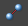

使用“资产编辑器”(Asset Editor)可以将已发布名称与封装的节点属性进行绑定。同样，已发布的属性或节点也可以取消绑定，这将在资产上留下未绑定的已发布名称。
绑定属性
- 打开“资产编辑器”(Asset Editor)（窗口 > 常规编辑器 > 资产编辑器(Window > General Editors > Asset Editor)）。
- 在左侧面板中选择含有要绑定的已发布名称的资产。
- 单击“锁定资产”图标
 。
。资产已绑定和未绑定的已发布名称显示在右侧面板中。
- 在左侧面板中，选择要绑定到对应对象之下的属性。
- 在右侧面板中，展开“未绑定”(Unbound)部分。
- 在要将此属性绑定到的已发布名称旁，单击绑定图标 。
“绑定”图标将更改为“取消绑定”图标，封装的属性名称将显示在已发布名称旁，表示这两者已绑定。现在就可以在“属性编辑器”(Attribute Editor)或“通道盒”(Channel Box)中修改此属性的值。
绑定节点
- 选择含有要绑定的节点的资产节点。
-
 + 选择要绑定的节点。
+ 选择要绑定的节点。 - 打开“属性编辑器”(Attribute Editor)。
- 导航到资产选项卡。
- 在“已发布的节点”(Published Nodes)部分，要将此节点绑定到的已发布名称旁，单击“绑定”图标 。
取消绑定属性
- 打开“资产编辑器”(Asset Editor)（窗口 > 常规编辑器 > 资产编辑器(Window > General Editors > Asset Editor)）。
- 在左侧面板中，选择包含要取消绑定的已发布属性或已发布节点的资产。
- 单击“锁定资产”图标 。
资产已绑定和未绑定的已发布名称显示在右侧面板中。
- 在要取消绑定的已发布属性旁，单击“取消绑定”图标
 。
。关联的内部节点属性名称将消失。属性将从“属性编辑器”(Attribute Editor)和“通道盒”(Channel Box)中消失，因为现在此属性仅引用已发布的名称。
取消绑定节点
- 选择包含要取消绑定的节点的资产。
- 打开“属性编辑器”(Attribute Editor)。
- 导航到资产选项卡。
- 在“已发布的节点”(Published Nodes)部分，要将此节点从其中取消绑定的已发布名称旁，单击“取消绑定”图标 。